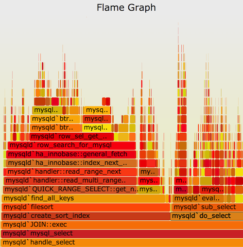

https://youtu.be/EEdrW-P7kXc - Lect-34-pt1-debuging.mp4
https://youtu.be/BQDaOq3x1cc - Lect-34-pt2-debuging.mp4
https://youtu.be/RFn-kSJbJOA - Lect-34-pt3-visualization.mp4
https://youtu.be/mJPUrVMQLkg - Lect-34-pt4-system-calls-web-debuging.mp4
https://youtu.be/EKEVAD8fq5M - Lect-34-2150-pt5-profiling.mp4
From Amazon S3 - for download (same as youtube videos)
http://uw-s20-2015.s3.amazonaws.com/Lect-34-pt1-debuging.mp4
http://uw-s20-2015.s3.amazonaws.com/Lect-34-pt2-debuging.mp4
http://uw-s20-2015.s3.amazonaws.com/Lect-34-pt3-visualization.mp4
http://uw-s20-2015.s3.amazonaws.com/Lect-34-pt4-system-calls-web-debuging.mp4
http://uw-s20-2015.s3.amazonaws.com/Lect-34-2150-pt5-profiling.mp4
So what is debuting - debuting is taking your code and making it do what you expect instead of why you put into the computer. Computers are the ultimate literalist. They do exactly what you tell them to do - no more and no less. You have an expectation that the code will do A, but you told the computer to do B. It will do B until you change the code. Debugging is the process of changing the code to get it to do A.
Hardware: Use a Logic Analyzer. Use a 7 segment display. Get output.
In Code: Use print statements.
Send data to a “log” file. Or Collect it for remote access later. Be able to turn-on/off the detail of this information.
Advantages:
Tricks:
Print out the file and line number. In C/C++:
printf ( "Line No: %d\n", __LINE__ );
In Go I developed a package to do this:
import "pschlump/godebug"
...
func main() {
fmt.Printf ( "Line: %s\n", godebug.LF())
}
In JavaScript (Node.js and front end):
// ln will return the line number that you are currently at - for debuging.
function ln() {
var stack = stackTrace();
var frameRE = /:(\d+):(?:\d+)[^\d]*$/;
do {
var frame = stack.shift();
} while (!frameRE.exec(frame) && stack.length);
return frameRE.exec(stack.shift())[1];
}
console.log ( "Line: ", ln())
In Python:
from inspect import currentframe
def get_linenumber():
cf = currentframe()
return cf.f_back.f_lineno
print "This is line 7, python says line ", get_linenumber()
Know when to flush the output! Normally output is buffered. If your program is dying in the middle - then you need to flush the output - wait for the output to occur before going on. In C:
flush(stdout);
In C++ using std::
cout << std::flush;
There are similar capabilities in other languages.
Windows has a “logging facility” that I find really horrid. This is because the only way to access it is via a single GUI tool and it has no search!
Linux/Unix looks at it more like it is a file. Apache and Nginx log to files. Lots of other tools log to the standard system log. Usually you will need to take the log and do some data-manipulation to get to what you want in the log. To get the log you use the commands “log show” or “dmesg”. When I demoed a few lectures ago with VI on accessing a log I got the log via dmesg, then copied the file using scp. Look in /var/log for most log files.
There is a command for sending stuff to the system log from a shell script.
$ logger "Hello Logs"
On BSD based systems like MacOS
$ log show --last 1m | grep Hello
On Linux/Unix and System V based Unix
# journalctl --since "1m ago" | grep Hello
Python has a “debuger” called pdb. C/Fortran/C++ you are looking at things like “gdb”. If you use a compiler based on llvm (XCode on a mac) then “lldb”. All of these allow you to access and manipulate a running program. I use all of them at one time or another. If you are working on the Unix/Linux kernel - then look into using “adb”. “adb” is really scary - you can use it to debug a currently running kernel!
Let’s run ‘pdb’:
$ python3 -m pdb demo.py
Documentation on pdb: https://docs.python.org/3/library/pdb.html.
pdb is represenatative of debuggers - this is a quick overview of the commands.
| C | Command | Description |
|---|---|---|
| q | quit | Exit debugger. |
| l | list | Displays 11 lines around the current line (PC) or continue the previous listing. |
| s | step | Execute 1 more line, stop at the first possible occasion. |
| n | next | Continue execution until the next line in the current function is reached or it returns. |
| b | break | Set a breakpoint - a breakpoint is a place to stop when you run. |
| p | Evaluate the expression in the current context and print its value. | |
| r | return | Continue execution until the current function returns. |
Sometimes you need to poke into code that you did not create. There are specialized tools for this. One way is to look at the system calls that the code is using. dtrace(Linux) and strace(Mac) are good for this.
Linux
sudo strace -e lstat ls -l > /dev/null
On macOS
sudo dtruss -t lstat64_extended ls -l > /dev/null
Another way is to poke into what the network is doing.
Look at the network packets to figure out the issue in your program. Use tcpdump and Wireshark are network packet analyzers that let you read the contents of network packets and filter them based on different criteria. Also using a “proxy” that lets you dig into network communication can be very valuable.
The Chrome/Firefox developer tools are very useful.
You can bring them up by right clicking (or control click) and you get a popup menu. Try “inspect” or “console”.
Look at: Source code - HTML/CSS/JS source code of any website.
Live HTML, CSS, JS modification - Change the website content, styles and behavior to your tastes.
The console gives you a “Live” JavaScript (Ecma-262-Script) console. You can print out stuff, run stuff etc.
The network tab shows you the network communication and timing.
The “application” tab has cookies and local storage.
This is really how much CPU time a program uses. This is the most common form of profiling.
Sometimes you will need to look at other things like memory usage or network usage.
The two common types are tracing - where the profiler watches where the code runs
and counts it and sampling - where the profiler looks at where the code is periodically
and then counts that location.
Most languages have some sort of a profiler either built in or as a part of the IDE that you are using. In python there is a command line based profiler that I will give a quick demo of. It is called cProfile and returns the amount of time per function call.
Using a simple chunk of code:
import sys, re
def grep(pattern, file):
with open(file, 'r') as f:
print(file)
for i, line in enumerate(f.readlines()):
pattern = re.compile(pattern)
match = pattern.search(line)
if match is not None:
print("{}: {}".format(i, line), end="")
if __name__ == '__main__':
times = int(sys.argv[1])
pattern = sys.argv[2]
for i in range(times):
for file in sys.argv[3:]:
grep(pattern, file)
we run
$ python -m cProfile -s tottime grep.py 1000 '^(import|\s*def)[^,]*$' *.py
Output:
227401 function calls (227382 primitive calls) in 0.178 seconds
Ordered by: internal time
ncalls tottime percall cumtime percall filename:lineno(function)
2000 0.040 0.000 0.046 0.000 {built-in method io.open}
41000 0.031 0.000 0.040 0.000 re.py:271(_compile)
2000 0.029 0.000 0.175 0.000 grep.py:7(grep)
41000 0.020 0.000 0.020 0.000 {method 'search' of 're.Pattern' objects}
2000 0.018 0.000 0.023 0.000 {method 'readlines' of '_io._IOBase' objects}
2000 0.010 0.000 0.010 0.000 {built-in method builtins.print}
80050 0.009 0.000 0.009 0.000 {built-in method builtins.isinstance}
41000 0.008 0.000 0.048 0.000 re.py:232(compile)
1 0.003 0.003 0.178 0.178 grep.py:5(<module>)
4000 0.003 0.000 0.005 0.000 codecs.py:319(decode)
2000 0.002 0.000 0.002 0.000 {built-in method _locale.nl_langinfo}
4000 0.002 0.000 0.002 0.000 {built-in method _codecs.utf_8_decode}
2000 0.002 0.000 0.004 0.000 _bootlocale.py:33(getpreferredencoding)
2000 0.001 0.000 0.002 0.000 codecs.py:309(__init__)
2000 0.001 0.000 0.001 0.000 codecs.py:260(__init__)
3/1 0.000 0.000 0.000 0.000 sre_parse.py:475(_parse)
6/1 0.000 0.000 0.000 0.000 sre_compile.py:71(_compile)
44 0.000 0.000 0.000 0.000 sre_parse.py:164(__getitem__)
7/2 0.000 0.000 0.000 0.000 sre_parse.py:174(getwidth)
22 0.000 0.000 0.000 0.000 sre_parse.py:233(__next)
2/1 0.000 0.000 0.000 0.000 sre_parse.py:417(_parse_sub)
1 0.000 0.000 0.000 0.000 sre_compile.py:759(compile)
[Omitted Lines - lots of stuff called that will have any effect]
This kind of output can be hard to visualize. For this reason this can be converted into a “flame graph” that shows where most of the time is spent. This is an example:

Flame Graph See: http://www.brendangregg.com/flamegraphs.html.
Copyright © University of Wyoming, 2020.